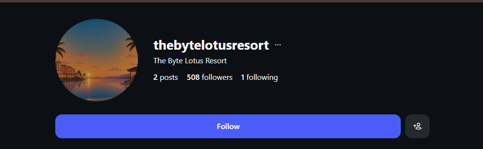
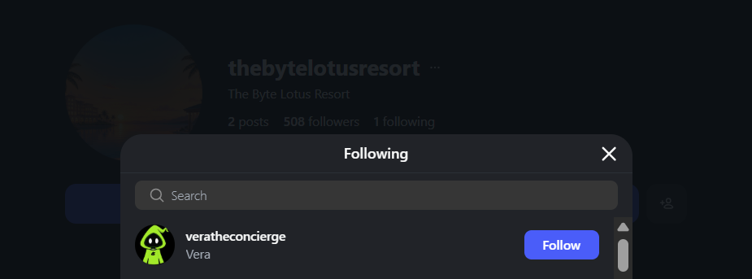
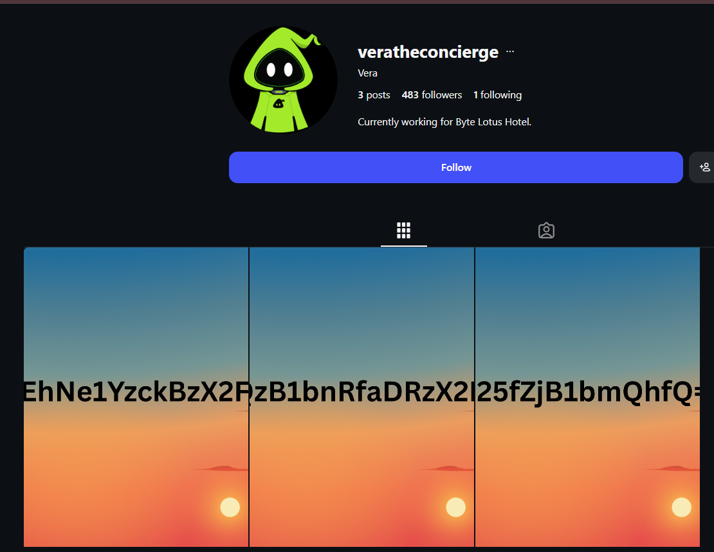
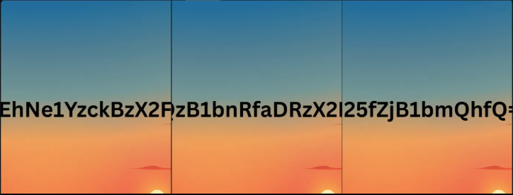

Challenge Summary
The task provides a promotional brochure image for a fictional resort, "The Byte Lotus Resort," along with a short in-fiction hint: a social media post from @0xMia claiming the brochure's hero photo "is giving... suspiciously perfect ."
The room description adds that the photo "carries an unmistakable AI fingerprint, and the account behind it leads somewhere the hotel never intended you to look."
Objectives:
- Analyze the provided image for embedded clues
- Apply OSINT techniques to trace the findings
- Locate a hidden social media account
- Retrieve the flag
Step 1: Initial File Analysis
Before jumping into social media, I ran standard forensic checks on the provided PNG to rule out anything hidden directly in the file:
- Checked for EXIF metadata none present (PNG doesn't carry EXIF by default, and none had been injected)
- Checked PNG text chunks / img.info empty, no custom tEXt/iTXt chunks
- Ran strings on the file ; only compressed pixel-data noise, no readable strings, links, or usernames
Conclusion: nothing was hidden inside the file via steganography or metadata. The clue had to be visual, not embedded data.
Step 2. Spotting the AI Fingerprint
Re-reading the brief: "the hero photo carries an unmistakable AI fingerprint." That's a direct pointer to look at the image itself rather than its metadata.
I cropped and zoomed into the corners of the image (where AI generation watermarks are typically placed) and boosted contrast/brightness on the crop. In the bottom-right corner, a faint watermark reading:
PLAYGROUND AI became visible. This confirmed the brief's claim. the "hero photo" is AI-generated, and the watermark is the fingerprint the room is asking us to notice.
Step 3 Pivoting to OSINT (the account behind the image)
The next line of the hint "the account behind it leads somewhere the hotel never intended you to look" is the real pivot point. Rather than continuing to dig into the file, I switched to searching social media.
Searching Instagram for "The Byte Lotus Resort" surfaces the resort's official account: @thebytelotusresort.

Step 4 Checking the Following List
Instead of scrolling the resort's posts, I checked who the account follows (its "Following" list, not "Followers") a classic OSINT pivot, since a following list is often smaller and more curated than a follower list, and can reveal a deliberately-linked account.
The resort's account followed exactly one account:

@veratheconcierge
This lines up with the brochure text itself, which name-drops "VERA" as the hotel's AI concierge confirming this was the right pivot.
Step 5 Finding the Hidden Payload
@veratheconcierge's profile contains only a handful of posts. Viewed as a grid (thumbnail view), the posts show a large string of text overlaid across all three images but Instagram's grid view crops and adds thin borders between adjacent thumbnails, which cuts off a few characters right at each seam.

To get a clean read, I opened each of the three posts individually (full-size view) instead of relying on the cropped grid thumbnails:

| Post | Text |
|---|---|
| 1 | VEhNe1YzckBzX2FD |
| 2 | QzB1bnRfaDRzX2Iz |
| 3 | M25fZjB1bmQhfQ== |
Concatenated in order:
VEhNe1YzckBzX2FDQzB1bnRfaDRzX2IzM25fZjB1bmQhfQ==
This is a Base64-encoded string.
Step 6; Decoding
echo 'VEhNe1YzckBzX2FDQzB1bnRfaDRzX2IzM25fZjB1bmQhfQ==' | base64 -d
Output:
THM{xxxxxxx}A gotcha worth noting
My first decode attempt produced garbage in the middle of an otherwise-readable string (h4s_is3n_f0und instead of h4s_b33n_f0und).
The cause: in the sans-serif font used for the overlay text, a capital I and lowercase l render almost identically.
I had transcribed post 2's string with a lowercase l (X2lz) instead of the correct capital I (X2Iz). Since Base64 is case-sensitive, this small misread was enough to corrupt the decoded output.
Lesson: when a decoded string comes out mostly readable with one garbled chunk, suspect a character misread rather than a wrong pivot especially for visually similar characters like l/I/1, O/0, or S/5.
Key Takeaways
- Not every image challenge is a steganography challenge — check metadata/hidden files first, but don't stop there.
- Read the challenge flavor text closely; it often contains the actual investigative lead (here, "the account behind it").
- A "Following" list can be a more targeted pivot point than a follower list, especially when an account follows very few others.
- Grid/thumbnail views on social platforms can crop or obscure image content — always check the full-resolution individual post before transcribing text from an image.
- Base64 is case-sensitive; visually ambiguous characters (l/I/1, O/0) are a common source of decode errors;re-check your transcription if a decode looks almost right.
Tools Used
- Python (PIL) for image cropping, zooming, and contrast enhancement
- strings for basic file inspection
- Instagram (manual OSINT following list, profile posts)
- base64 (CLI) for decoding